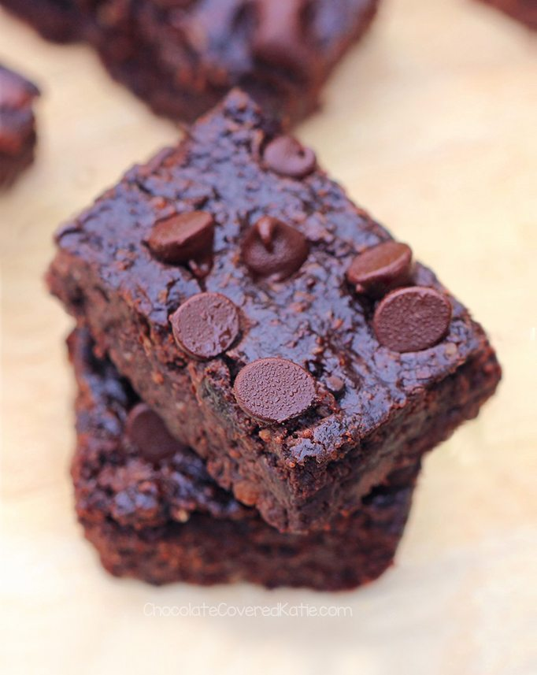

Black Bean Brownies

Nobody will believe that these brownies are actually made with black beans!
Ingredients
- 1 15 ounce can black beans, drained and rinsed
- 2 tablespoons cocoa powder
- 1/2 cup quick oats
- 1/3 cup pure maple syrup
- 1/4 cup coconut oil
- 2 teaspoons pure vanilla extract
- 1/2 teaspoon baking powder
- 1/2 cup chocolate chips
Steps
- Preheat oven to 350 F
- Combine all ingredients except chips in a good food processor, and blend until completely smooth
- Stir in the chips, then pour into a greased 8×8 pan
- Bake for 15-18 minutes
- Allow to cool for 10 minutes before cutting